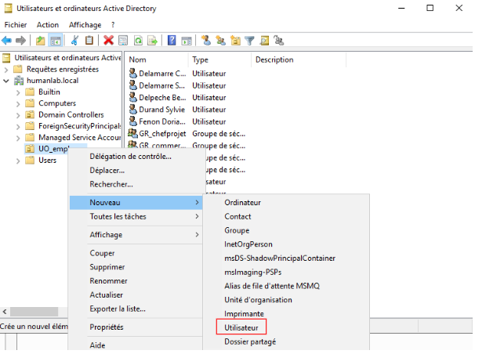

AP0 - BTS SIO
Infrastructure réseau
Windows & Linux
Conception et déploiement d'une infrastructure réseau professionnelle et sécurisée : domaine Windows Server, serveur web Debian, segmentation VLAN et simulation Cisco Packet Tracer.

Technologies & outils
Objectifs du projet
Mise en place d'un environnement réseau professionnel simulé, combinant Windows Server pour la gestion du domaine et Linux Debian pour les services web, le tout sécurisé et segmenté par VLAN.
Périmètre des réalisations
- Déploiement d'un contrôleur de domaine Windows Server (Active Directory)
- Intégration de clients Windows dans le domaine
- Installation d'un serveur web Apache sous Debian et connexion au domaine
- Segmentation VLAN via Cisco Packet Tracer
- Configuration DNS, DHCP et règles de sécurité
- Tests de connectivité et validation de l'isolation des sous-réseaux
Ce que j'ai appris
🔒 Sécurité by design
Concevoir la sécurité dès l'architecture réseau, pas après coup.
🌐 Administration système
Gestion d'un domaine Windows Server, des GPO et des utilisateurs AD.
🐧 Linux en production
Configuration et maintien d'un serveur Debian en environnement réseau.
📡 Réseaux avancés
Segmentation VLAN, routage inter-VLAN et simulation avec Cisco Packet Tracer.
